漫画版
第九話「二度降った雨」
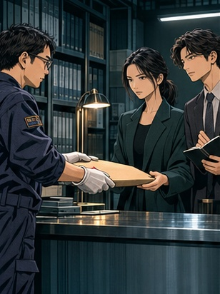
翌朝・資料室
封の照合写真を送った担当が、この二枚も見てくれと。別の日の記録に付いていたそうだ。
雨の夜、喫茶店の外では足音に合わせて水が跳ねた。
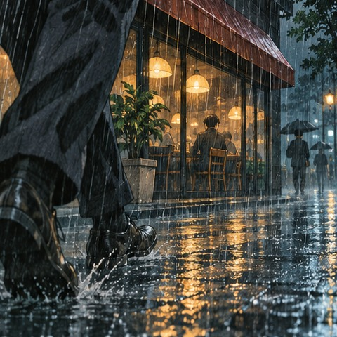
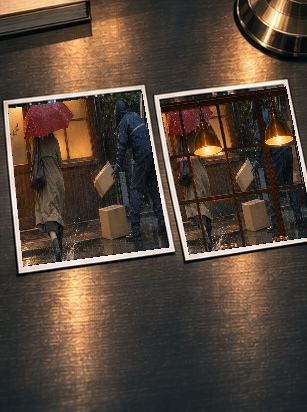
喫茶店の配布記録。添付先に記された日付は別々。
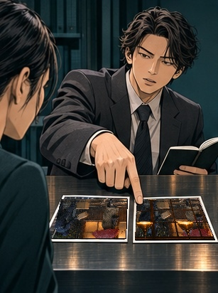
日付は別でも、同じ店なら赤い傘が写ることはあるか。
1 / 4
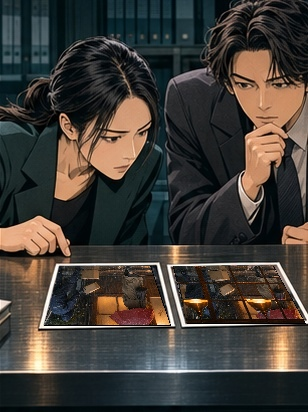
傘だけじゃない。箱の傾きと、靴の後ろを見て。
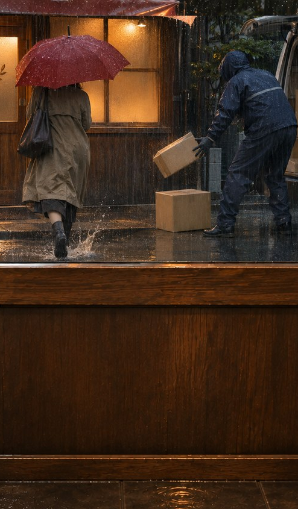

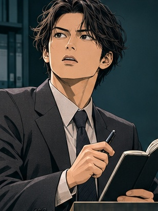
しぶきの筋まで一致してる。同じ瞬間の写真が、別の日付で配られた？
その午後、捜査本部から分厚い封筒が届いた。
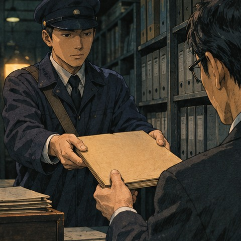
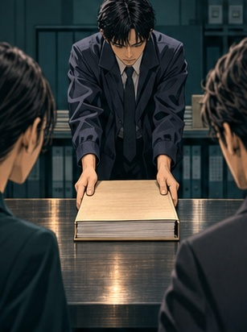
その午後・捜査本部から最終報告
2 / 4
この写真を根拠に、男を一連の事件の指示役としたそうだ。
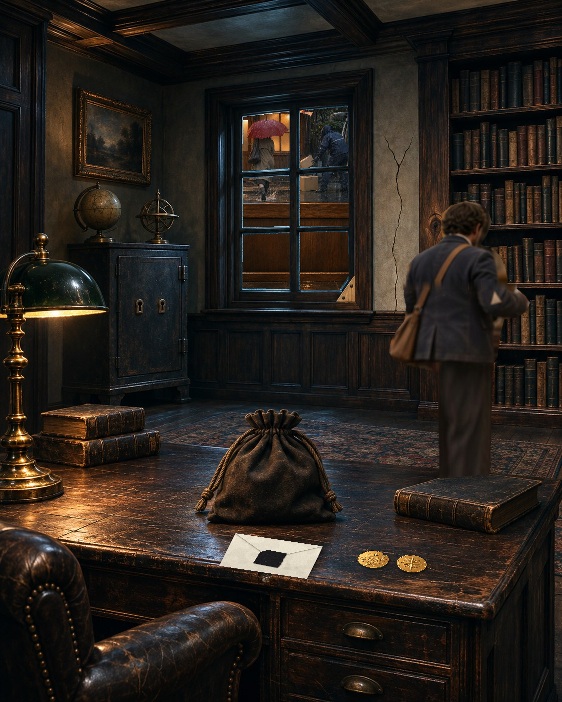
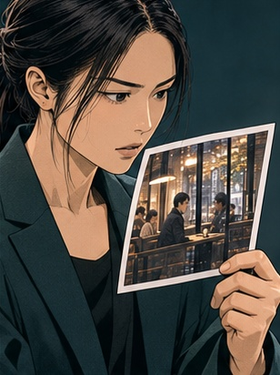
……窓に赤い傘。係長、その写真を見せてください。
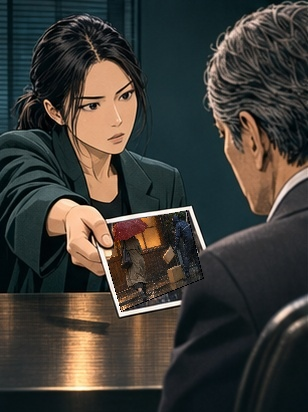
書斎の窓を拡大して、さっきの窓外と並べてください。
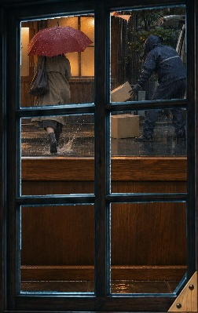
3 / 4
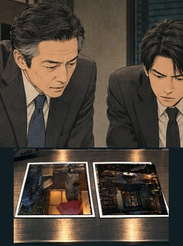
箱の傾きも、しぶきも同じだ。最終報告の写真にも、あの窓外が写っている。
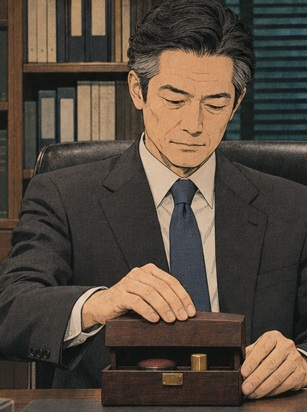
報告の受け付けは保留だ。撮影元が分かるまで、この写真を指示役の証拠にはできない。
資料室・日没後
写真の出どころは空欄。手掛かりは、並んだ事件番号だけだった。
4 / 4